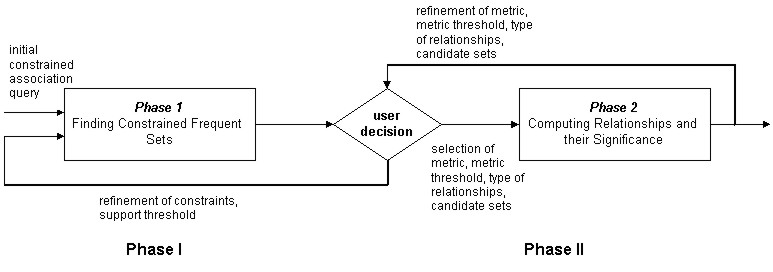
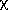

1 A Two-Phase Architecture
For years now, the classical model of association mining has resembled a black box. First, the user specifies the part of the database to be mined. Next, the user specifies minimum thresholds for measures such as support and confidence. The system then executes one of several fast mining algorithms. At the end of a highly data intensive process, it returns a very large number of associations, some of which are hopefully what the user was looking for.
We believe that there are three main drawbacks of the classical model:
In the SIGMOD ‘98 paper, Exploratory Mining and Pruning Optimizations of Constrained Association Rules, we suggested changes to the classical architecture, giving the user the ability to explore the data before performing any crucial operations. This new architecture is the first attempt at making the mining process exploratory on behalf of the user. This is accomplished by splitting up the operation into two re-iterable phases, as shown in Figure 1. In Phase I, the user can:
In Phase II, users can:

Figure 1: Two-Phase Architecture
2 The CAP Prototype
The prototype being demonstrated is the first fully functional association mining program capable of two-phase exploratory mining and constraint handling. Some of its features include:
3 Our Demonstration
A simple supermarket database is used in the prototype. Each item in the database has an
ItemID, an ItemName, a Type and a Price. The supermarket has recently been carrying out a "junk food" promotion. Customers who come in to buy a snack item can purchase a soda item for an additional penny. Since the promotion, the manager has realized that sales overall have improved. He wants to know what kinds of other items are being bought most frequently with the promotional combo. Specifically, he is interested in only those sets of items whose average price is greater than or equal to $6, since his potential revenues are greater with higher priced products.The variable
S will represent the antecedent set, and T will represent the consequent. The following steps will be taken to find the associations:
2 calculation of related sets